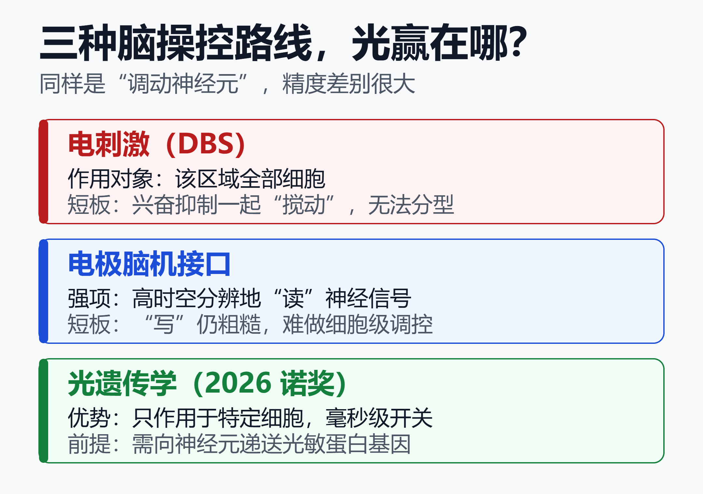
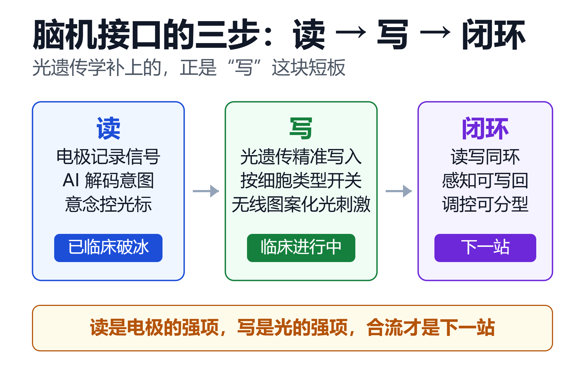

2026 诺奖颁给“用光开关神经元”：从光遗传学到脑机接口下一站
2026 年 10 月 5 日，瑞典卡罗琳医学院把本年度第一个诺贝尔奖——生理学或医学奖，授予了 Karl Deisseroth、Peter Hegemann 和 Georg Nagel 三人，表彰他们“在光门控离子通道和光遗传学方面的发现”。
获奖理由听起来很科幻：让研究人员用一束光，在活体大脑中打开或关闭单个神经细胞。
这束光的故事始于一株没有眼睛的绿藻。二十年前，它是实验室里的“小众技巧”；今天，它是全球神经科学实验室的标配，正在复明临床试验中让失明患者重新“看到”光，也为脑机接口的竞争划出了新的方向：从单向“读脑”，走向可双向、可分型的“写脑”。
一、一株绿藻，送给人类一个“光控开关”
故事的起点不是大脑，而是水里。
Hegemann 与 Nagel 长期研究趋光性微生物：绿藻需要追逐阳光进行光合作用，但它没有眼睛，靠的是一种位于细胞膜上的蛋白质——通道视紫红质（channelrhodopsin）。光照到它，离子通道就打开，离子涌入细胞，产生电信号，藻类据此判断光的方向。
两人用大量生化与电生理实验确认：这是一种真正的“光门控离子通道”——光是钥匙，通道是锁。
而在大西洋另一端，斯坦福大学的 Deisseroth 正在寻找一把能精确控制神经元的“手术刀”。他是精神病学医生，每天面对抑郁症、精神分裂症患者，深知传统药物和电击疗法是多么“粗糙”：药物作用于全脑，电刺激无法区分细胞类型。
当通道视紫红质的论文发表后，多数人觉得“这藻类挺好玩”，Deisseroth 却看到了另一种可能：如果把绿藻的光控开关基因装进哺乳动物的神经细胞，是不是就能用光遥控大脑？
2005 年，他的团队把通道视紫红质基因导入培养的神经元，再用蓝光一照——神经元迅速产生动作电位。随后他们又在活体小鼠大脑中重复了这一结果。诺奖公报写道：这一方法“使研究人员能够研究活体大脑中的神经细胞如何影响记忆、感觉和行为”。
光遗传学（Optogenetics）由此诞生：光学（Opto）+ 基因（Genetics），用基因改造赋予神经元感光能力，再用光完成毫秒级的精确操控。
二、Deisseroth：拿着手术刀的“大脑程序员”
三位获奖者分工清晰：Hegemann 与 Nagel 发现并解析了光开关，Deisseroth 完成了从“藻类蛋白”到“活体大脑遥控器”的关键一跃。
Deisseroth 的特殊之处在于他的双重身份。他既是生物工程教授，也是临床精神病科医生。北欧时报的诺奖解读把这项技术的意义概括为一句话：神经科学从“观察相关性”走向“验证因果”。
过去，科学家只能在 fMRI 图像上看到“抑郁的人某个脑区更亮”，但亮与抑郁谁是因、谁是果，无从得知。光遗传学第一次让研究者在小鼠身上“按下这个回路，看它是否抑郁”“关掉那个回路，看恐惧是否消失”——把大脑当成可以逐行调试的程序。
- 恐惧记忆：点亮特定神经元，小鼠重现恐惧反应；
- 奖赏与成瘾：抑制奖赏回路，酒精偏好随之下降；
- 社会行为：操控下丘脑特定细胞群，孤立小鼠重新开始社交。
2023 年，Deisseroth 在斯坦福发起 Human Neural Circuitry（人类神经回路）计划，用高通量数据实时研究人脑活动；他写的非虚构作品《Projections》记录了他与精神疾病患者的相遇。诺奖公布后，他在斯坦福的说明会用一句给孩子的话解释自己的工作：“我们可以用光，把神经细胞打开或关上。”
中国科学家与这条脉络渊源不浅。复旦大学脑科学研究院张嘉漪教授曾与 Deisseroth 合作、以第一作者发表论文；她在诺奖揭晓后对媒体表示，这项被“发现”了二十余年的技术已在眼科学领域有了非常多临床的实践，未来有望在神经及精神领域开拓更多可能性。
三、为什么必须是“光”：三种脑操控路线对比
脑机接口和神经调控领域并不缺“电”。深部脑刺激（DBS）治疗帕金森已有数十年历史，电极也能记录神经信号。那光遗传学到底强在哪？

核心差别可以概括为三点：分得清、开关快、可双向。
| 对比维度 | 电刺激 / 电极 | 光遗传学 |
|---|---|---|
| 作用对象 | 该区域全部细胞 | 特定类型细胞 |
| 调控方向 | 记录强、刺激粗 | 可开可关、双向 |
| 前提条件 | 不需基因改造 | 需递送光敏蛋白 |
电刺激像“用手搅动一锅粥”——兴奋性与抑制性神经元一起被激活，无法区分；光遗传学像“用筷子夹起其中一粒”——只操控被转入光敏蛋白的那类细胞，精度达到毫秒级。
这正是诺奖委员会所说的“决定性意义”：它给了神经科学一门真正的因果语言。
四、脑机接口的现在：电极路线跑得有多快
要理解光遗传学的“下一站”意义，先要看清脑机接口电极路线在 2026 年跑到了哪里。
中国在 2026 年完成了破冰。 2026 年 3 月，博睿康“植入式脑机接口手部功能代偿系统”（NEO）获国家药监局批准，成为国际首个进入临床应用阶段的侵入式脑机接口医疗器械；该系统历经 32 例多中心临床验证，解码准确率超过 90%，患者手部抓握功能获得代偿。5 月 18 日，超百通道全侵入式脑机接口系统多中心临床试验又在北京天坛医院启动，全国 11 家医疗机构参与，首批计划入组 32 例脊髓损伤患者。
半侵入式路线同样在提速：“北脑一号”注册临床试验 3 月底启动，电极置于硬脑膜外，不穿透脑组织。政策端，脑机接口被写入“十五五”规划，七部门实施意见提出到 2027 年关键技术突破、到 2030 年综合实力迈入世界前列；湖北落地全国首个脑机接口医疗服务价格，上海将相关产品纳入医保报销。
资本热度同步爆发。 据新华社《经济参考报》报道，2026 年上半年脑机接口投资超 60 起、金额超 70 亿元，而 2024 年全年仅 25 起、10.6 亿元。
大洋彼岸，Neuralink 在冲量产。 2026 年初，马斯克宣布启动脑植入体“大批量生产”并转向全自动手术流程：手术机器人单根电极线插入仅需 1.5 秒；截至 2025 年底全球约 20 例植入；公司完成 6.5 亿美元 E 轮融资，估值约 90 亿美元，并获得 FDA 针对语言与视觉修复的突破性设备认定。
电极路线的繁荣确立了脑机接口的基本范式：读——记录神经信号，AI 解码意图，让瘫痪患者用意念控制光标与机械臂。
但它的另一半——写——仍然粗糙。电极放电会同时搅动周围所有神经元，无法分型；这正是 DBS 长期面临副作用困扰的原因。脑机接口要走完“读写闭环”，缺的正是一支精细的“笔”。
五、下一站：当“光”走进脑机接口
光遗传学恰好补上了这支笔。学界已把“光遗传脑机接口”（Optogenetic BCI）列为明确方向：综述论文指出，光遗传学具备双向调控、高时空分辨率、细胞类型特异三大优势，可覆盖神经解码、脑功能增强与神经疾病治疗等场景。

2025 年 12 月，西北大学 John Rogers 团队在《自然·神经科学》发表的成果，展示了“写”的惊人潜力：一枚邮票大小、比信用卡还薄的柔性无线装置贴在颅骨外侧，透过颅骨向皮层投射 64 颗 micro-LED 组成的图案化光斑。实验小鼠学会了把没有触觉、视觉、听觉参与的光图案解读为有意义的信号，并据此完成决策任务——大脑绕过天然感官，直接学会了“读”一串人工写入的神经信号。
研究团队给出的应用前景包括：恢复丧失的感官、为假肢提供触觉反馈、疼痛调控与下一代神经治疗。
最能体现“下一站”张力的，是复明赛道上的两条路线对撞：
- 电极路线：Neuralink 的 Blindsight 计划用视觉皮层植入体绕过眼睛直接向大脑写入信号；
- 光遗传路线：GenSight 的 GS030 把光敏基因疗法与特制眼镜结合，PIONEER 试验中一名仅剩光感的视网膜色素变性患者恢复了伸手取物的能力；日本 Restore Vision 的 RV-001 在 2026 年 5 月公布的一期数据显示，高剂量组三名全盲患者一个月内均恢复光感。
前者赌“硬核工程直连大脑”，后者赌“把神经元改造成新的感光细胞”。诺奖颁给光遗传学，等于为后一条路线盖上了权威背书。
更远的图景是闭环：AI 实时解码大脑意图，光以细胞级精度写回调控——读是电极的强项，写是光的强项，两者合流，才是脑机接口真正的“下一站”。这也解释了为什么七部门实施意见明确提到，创新基于光、电、磁、超声、化学的新型脑信号传感器，推动脑机接口与人工智能等领域企业合作。
六、一束光之下的门槛与隐忧
乐观之外，必须看清三道门槛。
其一是技术门槛。 光遗传学需要向神经元递送光敏蛋白基因，通常借助病毒载体，这是一次不可逆的基因改造；光在脑组织中的穿透深度有限，深层核团需要植入光源；外源蛋白也可能引发免疫反应。这些约束决定了它进人脑的速度会远慢于电极。
其二是临床次序。 眼睛是大脑的延伸，也是基因与光最先“汇合”的部位——复明临床明显走在精神疾病治疗前面。要看到光遗传学用于人类大脑深部调控，业界普遍预期还需更长时间。
其三是伦理与监管。 当“改写神经元”从科幻变为手术选项，知情同意、长期安全、神经隐私与身份认同问题将接踵而至。监管已在跟进：2026 年 6 月，国家药监局发布脑机接口医疗器械分类界定指导原则，明确侵入式产品统一按第三类医疗器械管理。
小结
2026 年的诺贝尔生理学或医学奖，奖励的不是某一台设备，而是一种让神经科学从相关性走向因果性的语言：用光，逐个细胞地询问大脑。
脑机接口的电极路线已经证明了“读”的力量——中国拿下全球首个侵入式 BCI 医疗器械注册证，Neuralink 冲向量产；而光遗传学正在补齐“写”的短板，从实验室的蓝光，走到复明临床，再走向无线、图案化的人工感知。
读得清、写得准、闭得上环，脑机接口的下一站，或许真的会亮起来。
免责声明：本文仅为信息整理与科普分析，不构成任何医疗、投资建议。临床试验数据以官方发布为准，光遗传学与脑机接口产品均处于研发或早期临床阶段。
参考来源：
- 诺贝尔奖官网 —— 2026 年诺贝尔生理学或医学奖摘要
- 诺贝尔奖官网 —— 2026 医学奖通俗解读：点亮神经科学的藻类蛋白
- 斯坦福医学 —— Deisseroth 获 2026 年诺贝尔生理学或医学奖
- Nature —— Medicine Nobel awarded for brain 'switch' that controls neurons
- Optica —— Three Researchers Awarded 2026 Nobel Prize for Optogenetics
- 上观新闻 —— 给大脑装“光控开关”：上海科学家解读诺奖得主成果
- 新华网 —— 超百通道全侵入式脑机接口进入临床试验
- 新华社《经济参考报》—— 2026 年中产业观察：脑机接口应用加速推广，投资迎来爆发式增长
- 中国政府网 —— 七部门关于推动脑机接口产业创新发展的实施意见
- 清华大学 —— 国内首款侵入式脑机接口获批上市
- Neuralink 官网 —— Updates（2026 年进展与融资）
- Economic Times —— Neuralink plans high-volume brain implant production in 2026
- Northwestern Engineering —— Wireless Device 'Speaks' to the Brain with Light
- PubMed —— Optogenetic Brain-Computer Interfaces 综述
- Foundation Fighting Blindness —— 光遗传疗法试验患者部分恢复视力
- PR Newswire —— Restore Vision 首次人体光遗传疗法中期结果
相关阅读：
推荐搭配装备
善其事，利其器。以下硬件能最大化你的AI体验👇
🔗 通过以上链接购买可支持本站持续运营 🙏